Home-range atlas
49 places we have lived in or kept going back to, each cut out of the world as a 3D block. The outline of every block is a home range: the area holding 95% of our Foursquare Swarm check-ins and Strava walks there, found with the kernel density method wildlife biologists use for collared animals.
One script builds each map from the same recipe: terrain from open elevation tiles, streets and buildings from Overture Maps, and a pin for each public place we returned to. Homes, hotels, exact dates and visit counts are left out, and both ends of every walking track are trimmed.
Places we lived and travelled, busiest first
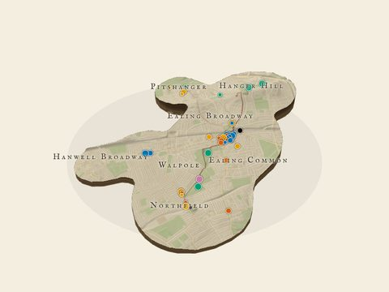
Our Ealing
West London, United Kingdom · 2017–2022
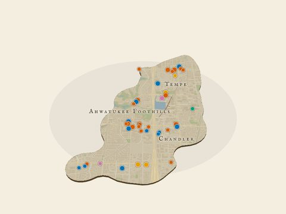
Our Tempe and Ahwatukee
Tempe and Phoenix, Arizona · 2018–2025
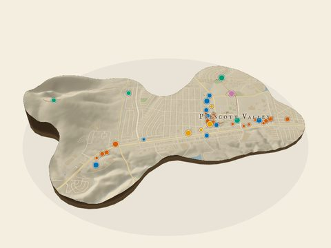
Our Prescott Valley
Prescott Valley, Arizona · 2023–2024
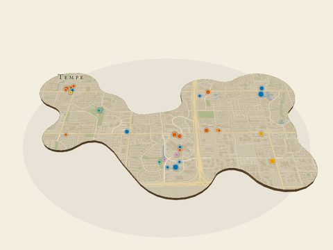
Our Chandler
Chandler, Arizona · 2018–2024
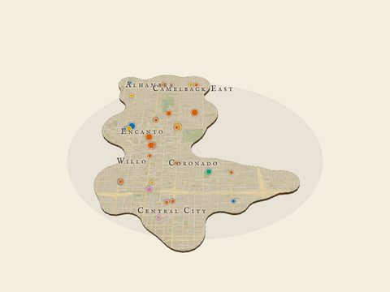
Our Central Phoenix
Phoenix, Arizona · 2016–2024
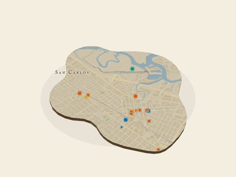
Our Redwood City and San Carlos
Redwood City, California · 2020
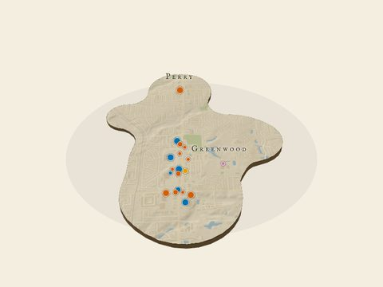
Our Greenwood
Greenwood, Indiana · 2016–2024
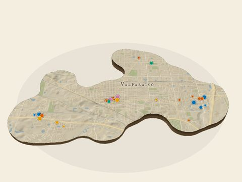
Our Valparaiso
Valparaiso, Indiana · 2016–2024
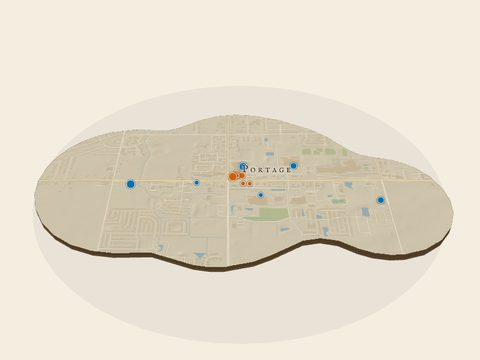
Our Portage
Portage, Indiana · 2016–2024
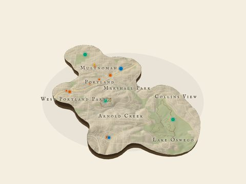
Our Southwest Portland
Portland, Oregon · 2017–2023
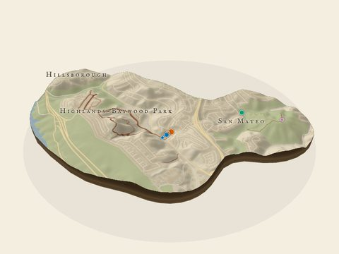
Our San Mateo Highlands
San Mateo, California · 2020
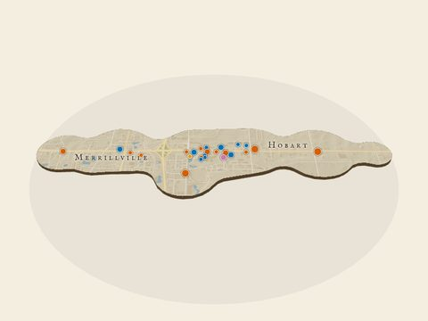
Our Hobart and Merrillville
Hobart, Indiana · 2016–2024
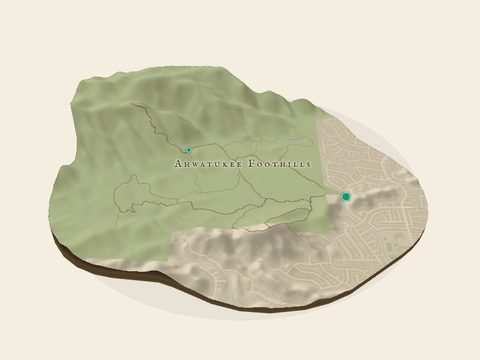
Our South Mountain
Phoenix, Arizona · 2019–2025
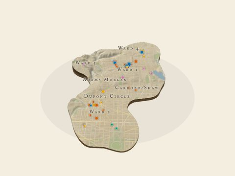
Our Washington
Washington, D.C. · 2021
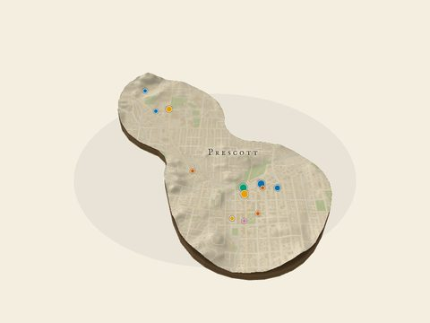
Our Prescott
Prescott, Arizona · 2023–2024
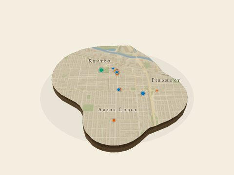
Our Kenton
Portland, Oregon · 2018–2023
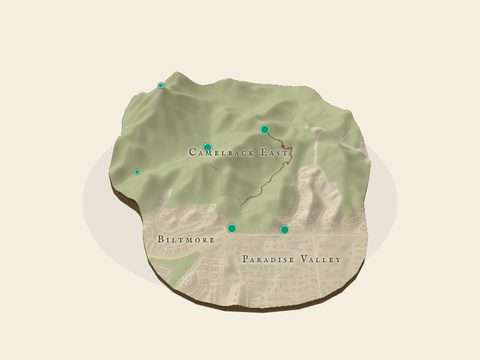
Our Phoenix Mountains
Phoenix, Arizona · 2018–2024
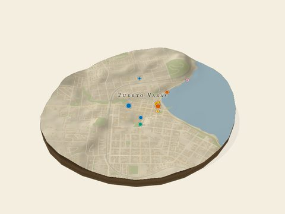
Our Puerto Varas
Puerto Varas, Chile · 2018–2019
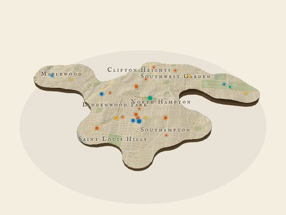
Our St. Louis
St. Louis, Missouri · 2021
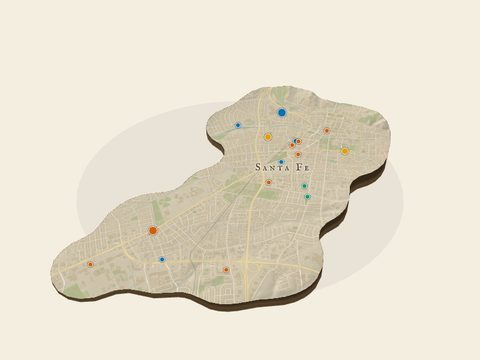
Our Santa Fe
Santa Fe, New Mexico · 2017–2023
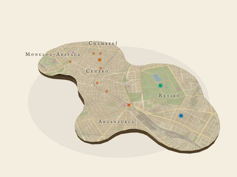
Our Madrid
Madrid, Spain · 2016
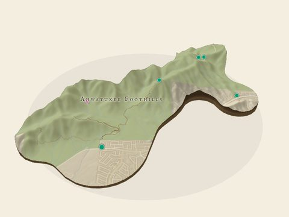
Our Ahwatukee Trails
Phoenix, Arizona · 2019–2024
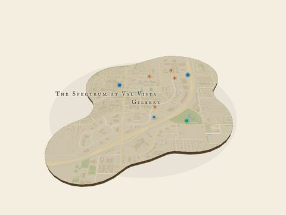
Our Gilbert
Gilbert, Arizona · 2018–2022
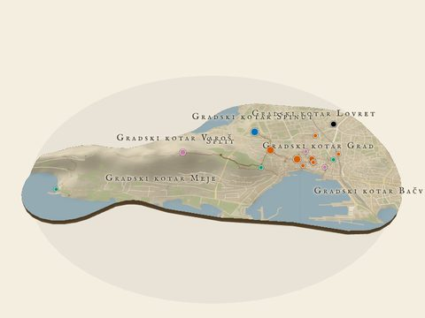
Our Split
Split, Croatia · 2022
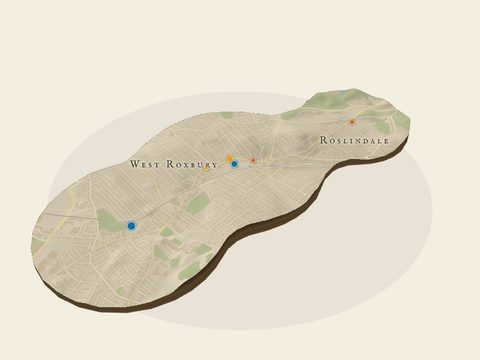
Our West Roxbury
Boston, Massachusetts · 2017
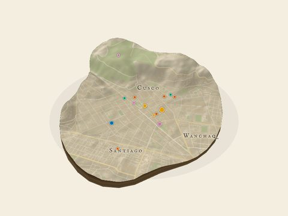
Our Cusco
Cusco, Peru · 2018
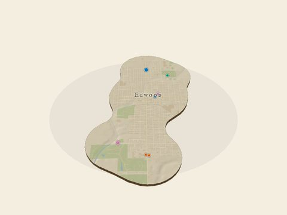
Our Elwood
Elwood, Indiana · 2017–2019
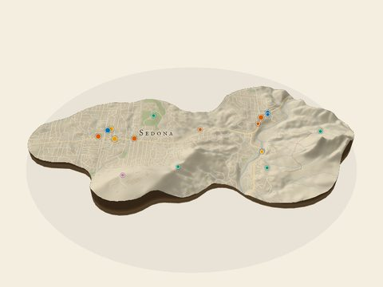
Our Sedona
Sedona, Arizona · 2018–2024
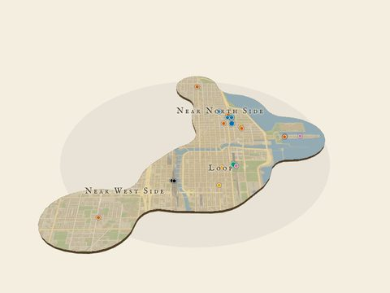
Our Chicago
Chicago, Illinois · 2016–2022
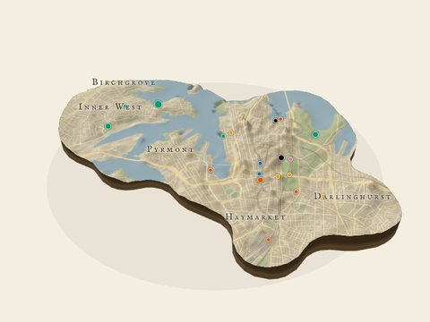
Our Sydney
Sydney, Australia · 2019
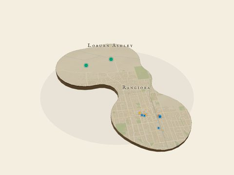
Our Rangiora
Rangiora, New Zealand · 2019
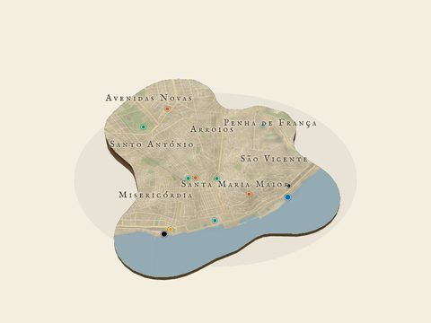
Our Lisbon
Lisbon, Portugal · 2016–2022
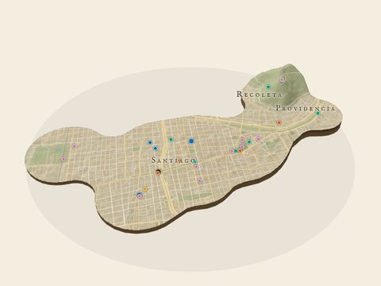
Our Santiago
Santiago, Chile · 2018–2019
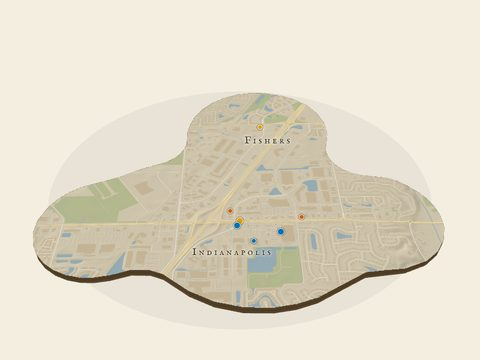
Our Fishers
Fishers, Indiana · 2017–2021
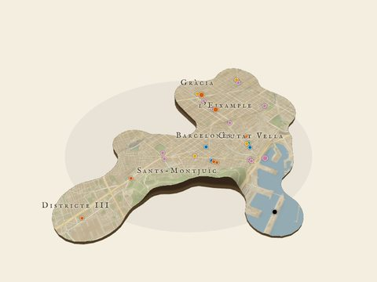
Our Barcelona
Barcelona, Spain · 2019–2022
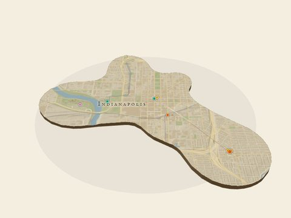
Our Indianapolis
Indianapolis, Indiana · 2016–2022
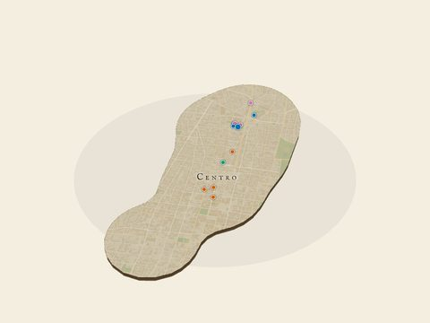
Our Mérida
Mérida, Mexico · 2024
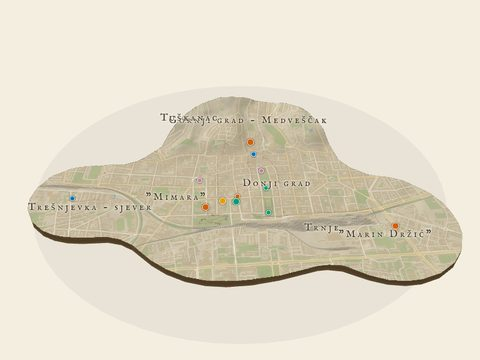
Our Zagreb
Zagreb, Croatia · 2022
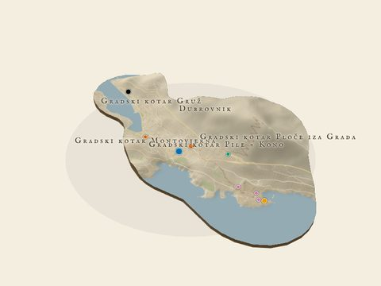
Our Dubrovnik
Dubrovnik, Croatia · 2022
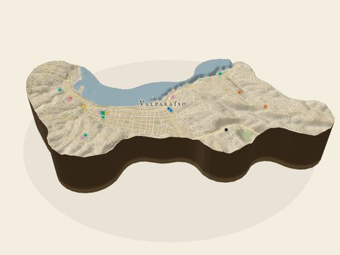
Our Valparaíso
Valparaíso, Chile · 2018
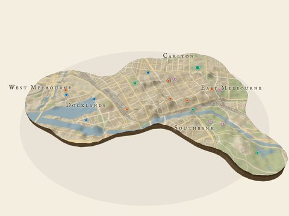
Our Melbourne
Melbourne, Australia · 2019
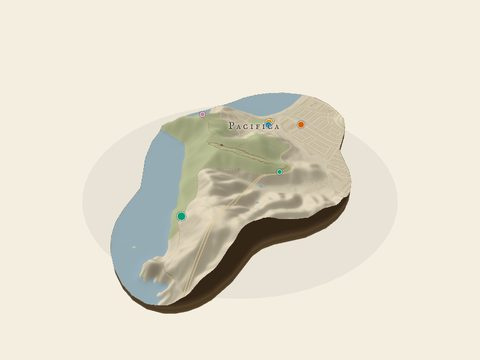
Our Pacifica
Pacifica, California · 2020
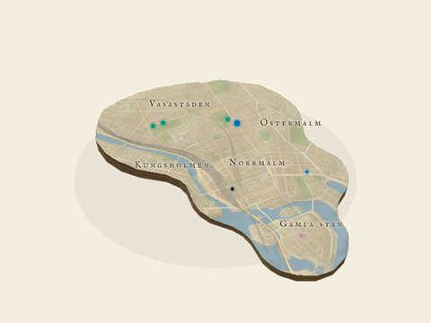
Our Stockholm
Stockholm, Sweden · 2017
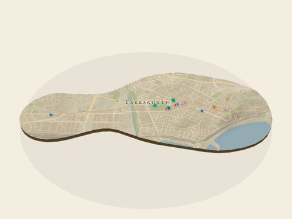
Our Tarragona
Tarragona, Spain · 2022
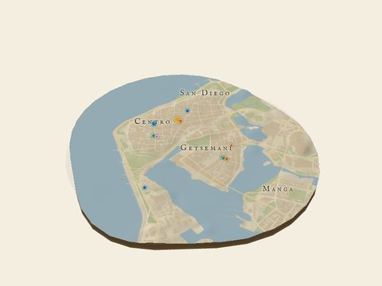
Our Cartagena
Cartagena, Colombia · 2016–2017
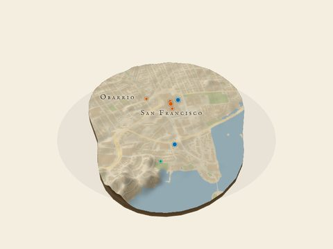
Our Panama City
Panama City, Panama · 2016
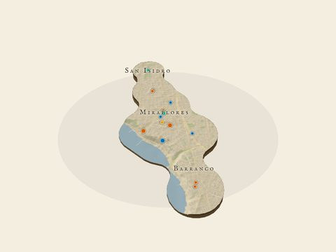
Our Miraflores
Lima, Peru · 2018
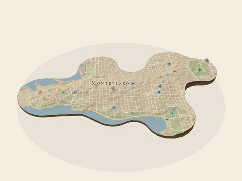
Our Montevideo
Montevideo, Uruguay · 2018
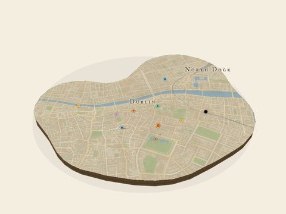
Our Dublin
Dublin, Ireland · 2016–2022